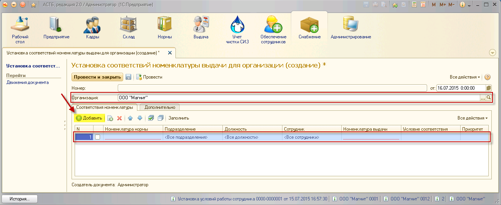
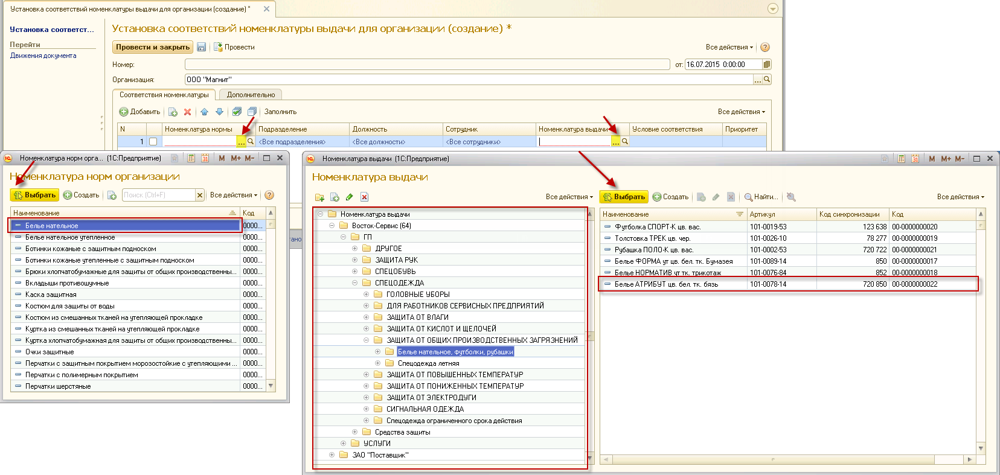
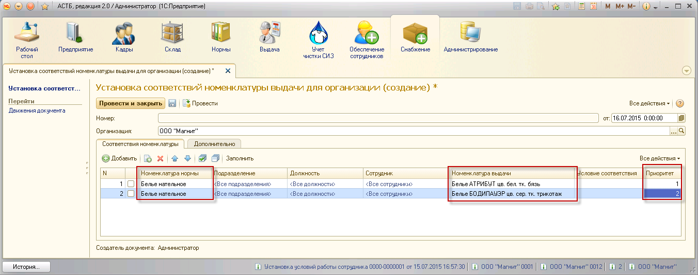
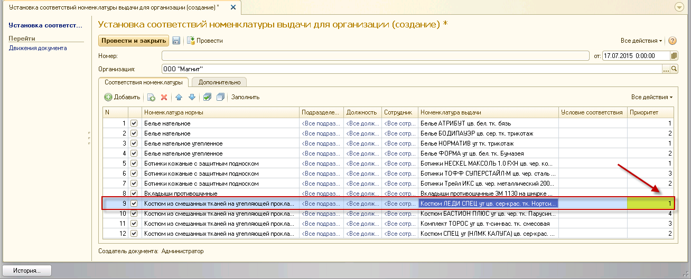
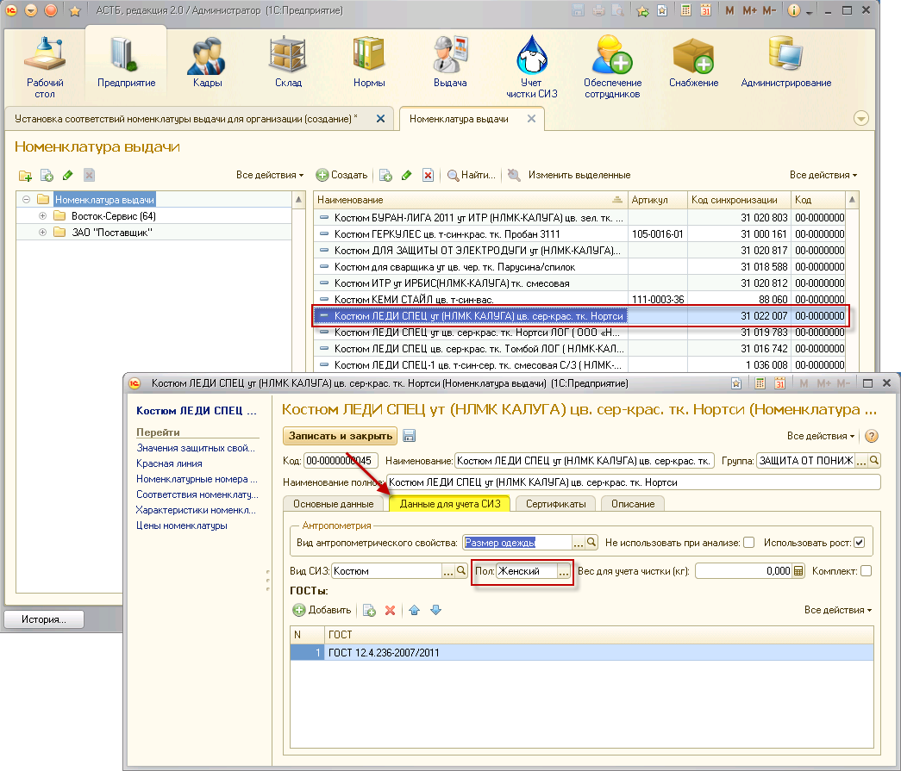
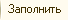
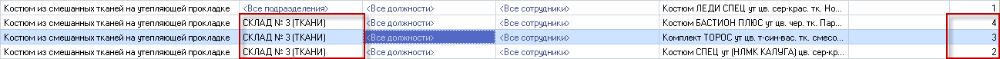

– Создать новый элемент копированием предыдущего;
– Создать новый элемент копированием предыдущего;Нормы выдачи СИЗ устанавливают номенклатуру нормы для каждого сотрудника, например, «Белье нательное» или «Ботинки кожаные», которые должны выдаваться с определенной периодичностью и по разным условиям. Данным позициям может соответствовать несколько разных номенклатур выдачи, то есть фактических названий товаров выдаваемых по данной номенклатуре нормы, например, «Белье АТРИБУТ» или «Ботинки Трейл ИКС».
В ПК АСТБ необходимо установить соответствия между номенклатурой нормы и номенклатурой выдачи, чтобы в дальнейшем была возможность выдачи СИЗ каждому сотруднику по сформированной потребности.
Стандартное соответствие номенклатуры подразумевает ничем не уточненное соответствие между номенклатурами нормы и выдачи.
Чтобы создать документ соответствия, зайдите в раздел «Снабжение», «Установка соответствий номенклатуры выдачи для организации», и нажмите кнопку «Создать».
В открывшемся окне выберите организацию и нажмите кнопку «Добавить», после чего появится первая строка для ввода данных.

Для установки стандартного соответствия достаточно заполнить столбцы «Номенклатура нормы» и «Номенклатура выдачи». Для этого, нажимая кнопки <...>
Примечание: при выборе наименования из справочника «Номенклатура выдачи» есть возможность выбрать поставщика.

Как было сказано выше, возможна установка соответствия одной номенклатуры нормы нескольким значениям номенклатуры выдачи. В этом случае, в каждой строке соответствия необходимо ввести приоритет.
Приоритеты важны на этапе подбора номенклатуры сотрудникам, так как система отбирает СИЗ из остатков на складе с учетом антропометрии сотрудников и проставленной приоритетности. Если на складе нет нужного товара с первым приоритетом, программа будет стараться подобрать товар со вторым приоритетом и так до тех пор, пока номенклатура не будет подобрана или не подобрана (если остатков на складе не хватает, чтобы закрыть потребность).

На примере выше видно, что номенклатуре нормы «Белье нательное» соответствует две номенклатуры выдачи: «Белье АТРИБУТ» (приоритет 1) и «Белье БОДИПАУЭР» (приоритет 2). Это означает, что более приоритетным товаром для выдачи будет «Белье АТРИБУТ».
По описанной схеме необходимо заполнить табличную часть всеми возможными соответствиями для номенклатуры выдачи, а затем проставить приоритеты для тех товаров, которые могут выдаваться по одной номенклатуре нормы.
Примечание: флажки должны быть проставлены для всех действующих строк документа соответствия.
Примечание: в обработке предусмотрен учет «женских» СИЗ. Они могут быть подобраны только женщинам, в отличие от СИЗ без маркировки пола (они могут быть подобраны как мужчинам, так и женщинам). В документе «Установка соответствий номенклатуры выдачи» рекомендуется присваивать высокий приоритет подобной номенклатуре, так как она в любом случае не подберется мужчинам, и при этом покроет потребность с меньшей вероятностью выдачи «мужских» СИЗ женщинам.

Чтобы определить маркировку пола выбранного СИЗ, зайдите в раздел «Предприятие», справочник «Номенклатура выдачи». В данном справочнике двойным нажатием выберите номенклатуру. Откроется окно, содержащее данные по выбранной номенклатуре. Перейдите во вкладку «Данные для учета СИЗ».

После проставления приоритетов в документе «Установка соответствий номенклатуры выдачи» нажмите кнопку «Провести и закрыть».
Командная панель формы «Установка соответствий номенклатуры выдачи для организации» содержит следующие вспомогательные кнопки:
– Создать новый элемент копированием предыдущего;
 – Удалить текущий элемент;
– Удалить текущий элемент;
 – Переместить текущий элемент вверх;
– Переместить текущий элемент вверх;
 – Переместить текущий элемент вниз;
– Переместить текущий элемент вниз;
 – Установить флажки;
– Установить флажки;
 – Снять флажки;
– Снять флажки;
– Заполнить табличную часть строками принятого ранее документа соответствия.
В программном комплексе АСТБ 2.0 предусмотрена дополнительная настройка документа «Установка соответствий номенклатуры выдачи» - установка уточненного соответствия, то есть возможность задать определенную номенклатуру выдачи для конкретного подразделения, должности или сотрудника.
В отличие от стандартного соответствия номенклатуры выдачи, подразумевающего простое соотношение номенклатур нормы и выдачи под определенным приоритетом, уточненное соответствие вводит более строгие параметры соответствия. Таким образом, формируется семь уровней уточненного соответствия:
1. Подразделение/Должность/Сотрудник
2. --------/Должность/Сотрудник
3. Подразделение/--------/Сотрудник
4. --------/-------- /Сотрудник
5. Подразделение/Должность/--------
6. --------/Должность/--------
7. Подразделение/-------- /--------
8. --------/--------/-------- (стандартное соответствие)
Примечание: старшинство уровней идет сверху вниз.
Ниже представлен пример уточненного соответствия номенклатуры выдачи.
Примечание: если сотрудники занимают несколько должностей (в одном или разных подразделениях), уточнения будут работать только для указанных в документе установки соответствий.
Примечание: данная настройка учитывает приоритеты только при одинаково заданных значениях подразделения, должности и сотрудника. Например, если было установлено несколько значений номенклатуры выдачи для одного подразделения с разными приоритетами. Таким образом, для данной обработки более приоритетными будут уровни соответствия.

Чтобы установить уточнение, нажимайте на кнопку <...> в строке заданного соответствия для столбцов «Подразделение», «Должность» и «Сотрудник», после чего будут открываться соответствующие справочники для выбора данных. Затем нажмите кнопку «Провести и закрыть».
Существует также возможность ввести информацию по соответствиям обработкой "Установка соответствий номенклатуры".